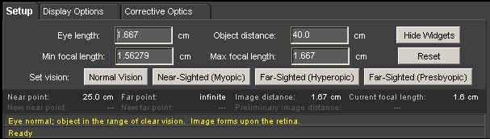
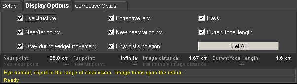

Geometrical Optics - The Eye: Directions
Under normal operation, your WebTOP window should look like the following:
The WebTOP window has four parts. The top portion is the active WebTOP scene.
The second portion is the VRML controls.
The third portion, the console, contains the keyboard entry boxes and buttons of the active panel (Setup in the figure above),
two message lines that provide information of interest (e.g., the distance to the eye's near point, far point, its current focal length, etc.), plus a message line that provides help messages.
The fourth portion is the recording panel that allows you to record and replay WebTOP sessions. You may scroll down to read on, or
select the appropriate link from the following items:
How To Change Parameters
During normal operation of the module, you should see a figure similar to the one below:
In this figure, the background image displays a "far away" viewpoint, in which the user can see: (a) a label that indicates the position of the far point (FP) of the eye, (b) a label that indicates the position of the near point (NP) of the eye, (c) a widget that can be used to change the position of the object, and (d) a tiny image of the eye to indicate its position. The foreground image provides: (a) a "magnified" picture of the eye, (b) three of the rays that enter it, (c) a widget that can be used to change the maximum focal length of the eye, (d) a widget that can be used to change the minimum focal length of the eye, (e) a widget that can be used to change the length of the eye, and (f) a view of the image on the retina.
Changing the Position of the Object with the Object Position Widget:
Place the cursor over the bright yellow arrow, press down on the left mouse button, and drag the arrow to the desired position.
Changing the Eye Length with Eye Length Widget:
Place the cursor over the red double cone at the rear of the eye, press down on the left mouse button, and drag the rear of the eye to the desired position.
Changing the Minimum and Maximum Focal Length with Their Widgets:
Place the cursor over the green rectangle labeled Min or Max out in front of the eye, press down on the left mouse button, and drag the rectangle to the desired position.
Changing a Parameter or Choosing an Eye Type Using the Console:
The console provides three different interfaces (or panels), which can by accessed by clicking on the appropriate tab: Setup, Display Options, and Corrective Optics.
(a) The Setup Panel
The Setup panel is pictured below. In this panel you may change the four indicated parameters by typing the desired values into the "Input" boxes, and then pressing the "Enter" key. You may also default paramter values for a Normal. Myopic, hyperopic, or Presbyopic eye by clicking on the appropriate Set Vision button

There is an alternative version of the Setup panel that can be used, and it is pictured below. In the Display Options panel (which will be discussed shortly), if the user unchecks the Physicst's notation check box, the Setup panel will change appearance and look like:
Here the Min focal length box has been replaced by the Unaccom(modated) power box, and the Max focal length box has been replaced by the Max(imum) accom(modation) box. This switch has been included for users who are more familiar with this notation, which is widely used in optometry. It should be noted that if the Setup panel is in this mode, the Min focal length and Max focal length widgets still work, and they will change the Unaccom power and Max accom variables in the correct way.
(b) The Display Options Panel
The Display Options panel is pictured below. It has eight check boxes that allow the user to either display or not display certain items. The default is that they are all checked, i.e., the corresponding item is displayed. The Set All button restores all eight boxes to their default settings.

(c) The Corrective Optics Panel
If the state of the eye is not normal (far point at infinity and near point 25 cm from the eye). The user may use the Corrective Optics panel to put either an eyeglass or a contact lens on the eye. To do this the user first clicks on the Corrective Optics tab. The panel then looks like the following:

In order to be able to add either lenses or glasses, press the Add button. The panel then looks like:
The user now controls whether to use glasses (the default choice) or contact lenses. If the user chooses glasses, he may set the value of the power of the glasses, and their position (distance from the eye). The default value for the position variable is 1.3 cm. The default value for the power needed to correct the eye's problem is then calculated by the module and listed as the Recommended power. If the user clicks on the Contact lens button, the position parameter value goes to zero. The user gives the corrective optics element in question to the eye by pressing the Set button. The figure below shows the scene after eyeglasses have been added to correct a myopic eye.
Changing the Position of the Corrective Optic Using the Lens Position Widget:
Once an eyeglass lens or contact lens is added to the scene, it becomes a widget. To use this widget, place the cursor over the corrective optic element, press the left mouse button, and drag the element to the desired position.
|